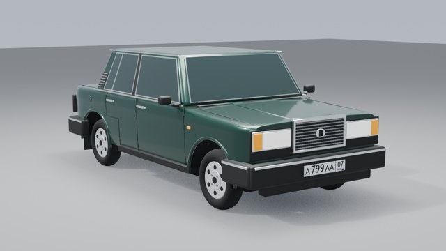

The northern descent
W / S accelerate and brake · A / D steer
Space cruise · R restart · F centre view
V free camera · Q / E down / up · Shift faster
Mouse look · Wheel zoom · Esc release mouse
Reconstructed from your street references. Terrain, distances and unseen buildings are inferred; this is not an exact digital survey.
Powered by Poly Haven · CC0 photographic materials

DRAG TO ROTATELoading your Lada 2106…
W / S DRIVE · A / D STEER · MOUSE LOOK
Preparing your drive